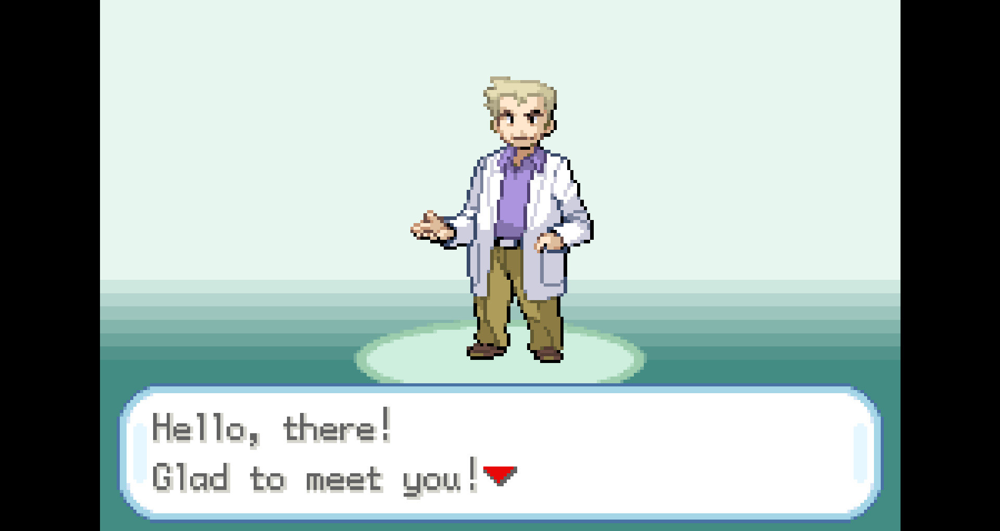
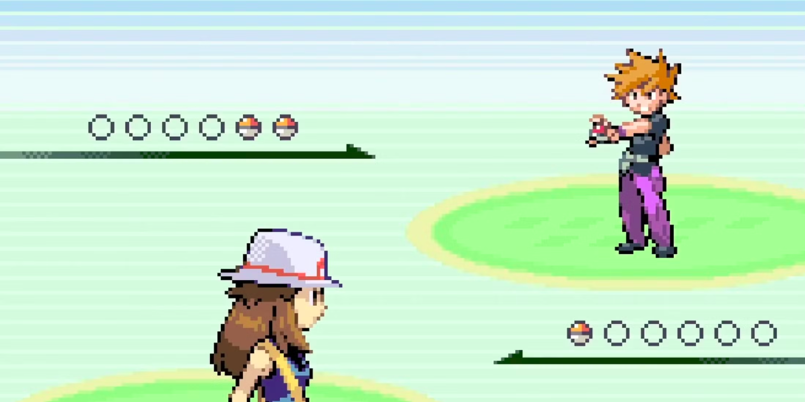

Pokemon FireRed e Pokemon LeafGreen são jogos remasters dos primeiros jogos da franquia(Pokemon red e Pokemon green),lançados para o gameboy advance. Ambos contam a história da primeira geração dos jogos, que se passa na região de Kanto.
O jogo começa com o Professor Carvalho explicando levemente como será a jornada do jogador e um pouco sobre o universo pokemon.
No meio disso, você chega na parte onde o professor carvalho pergunta se você é menino ou menina, te permitindo escolher entre jogar com Red(O rapaz) ou Green(A garota). Assim que você faz essa escolha, você pode escrever seu nome.
Professor carvalho também te apresenta para o seu rival do jogo. Ele será alguém que estará competindo contra você em meio a sua jornada. Ali, você poderá dar um nome a ele(mesmo que canonicamente o seu nome seja Blue). Terminando isso, você poderá começar sua jornada na região de kanto e começar a sua jornada no mundo pokemon!
Você começa o jogo com o personagem que escolheu na sua casa, e ao falar com a sua mãe que está no andar abaixo, você descobre que hoje é o dia em que sua jornada como treinador pokemon começa! após isso, você vai até o laboratório do professor carvalho, onde acabará trombando com o neto do professor - e seu rival desde a infancia. Vocês dois estão ali para escolher seus pokemons iniciais.

Suas opções estarão entre os três iniciais de Kanto: Charmander(tipo fogo), bulbasaur(tipo planta) e squirtle(tipo água). O seu rival sempre irá escolher o pokemon que tenha vantagem em cima do seu.
Charmander
Bulbasaur
Squirtle
Assim que ambos escolherem seus pokemons, blue irá te chamar para uma batalha entre os seus iniciais. Como ele sempre escolhe um pokemon com vantagem contra o seu, precisa tomar cuidado, mas no final ambos os pokemons estão em um nível baixo, então não corre riscos do jogador perder tão facilmente.
A partir disso, você estará livre para ir atrás das suas insignias para participar da liga Pokémon, o torneio que decide quem vai ser o mestre pokemon mais forte!
As Insígnias são pequenos broches que demonstram a sua vitória em cima dos líderes de ginásio. Em FireRed, são um total de oito ginásios, sendo eles do tipo: Pedra, Agua, Elétrico, Psíquico, Planta, Venenoso, Fogo e Terra.